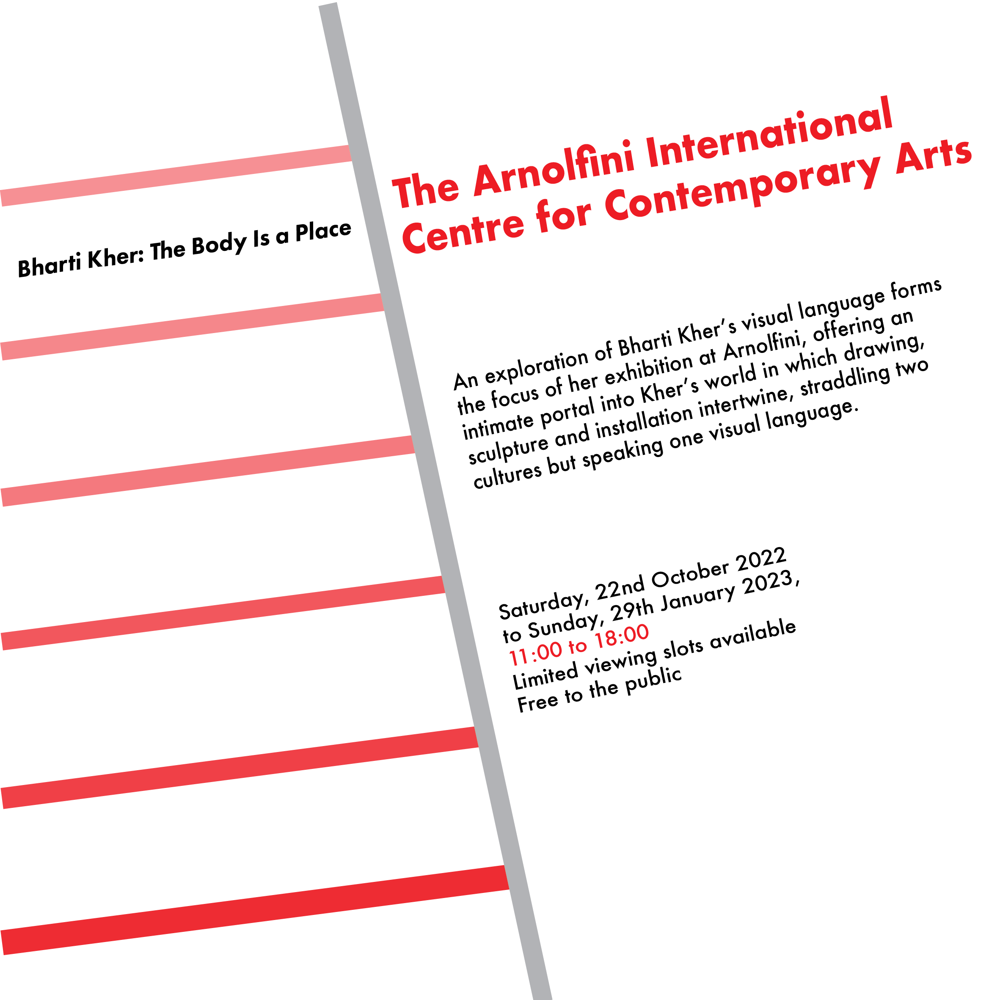
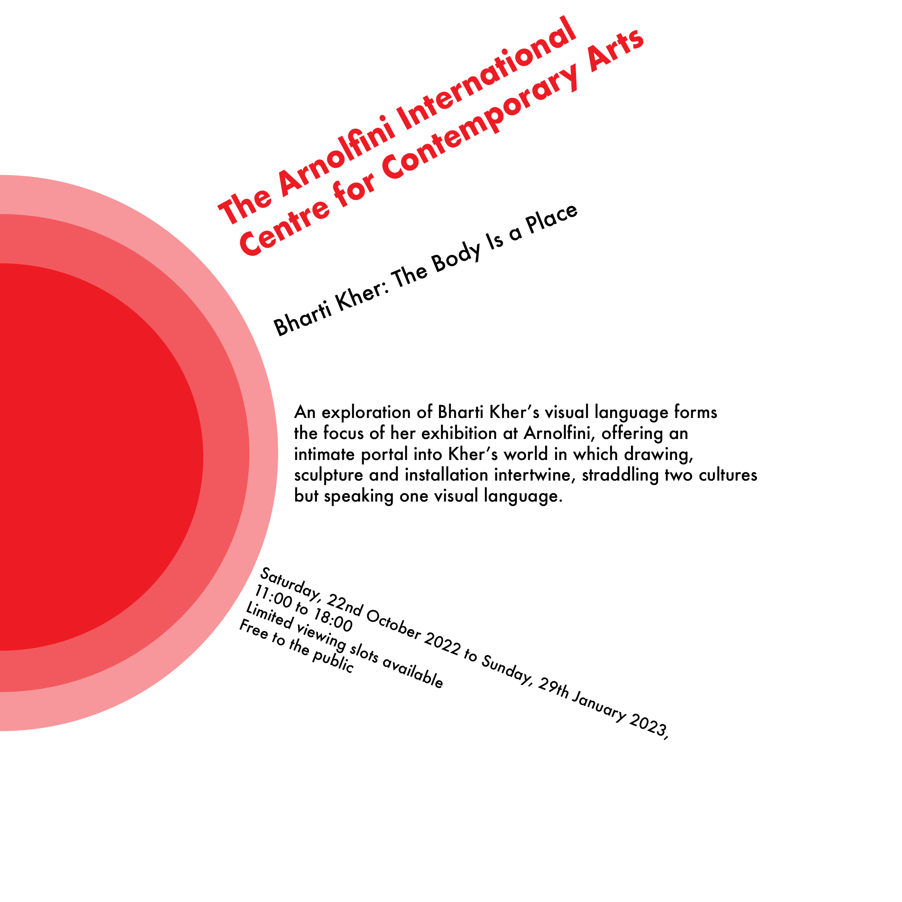
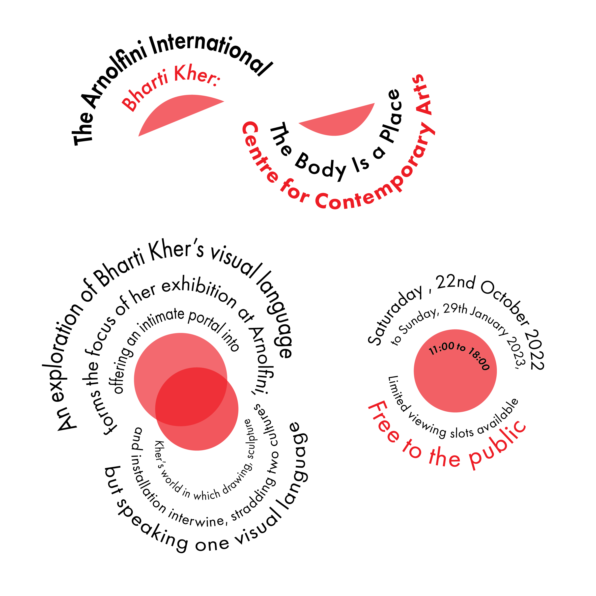
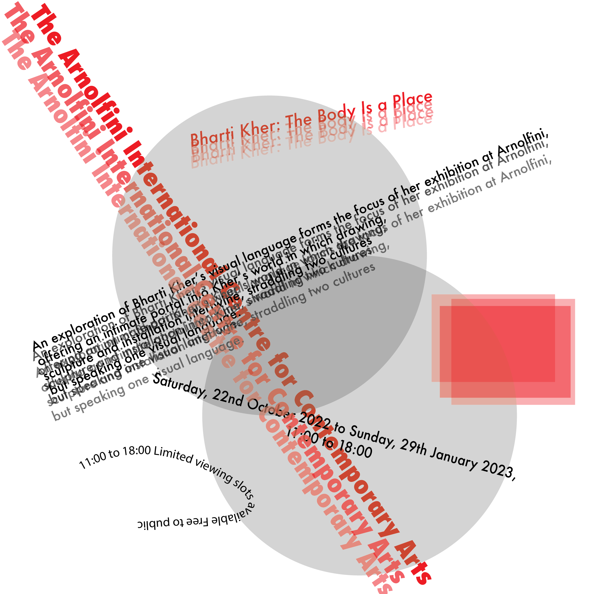
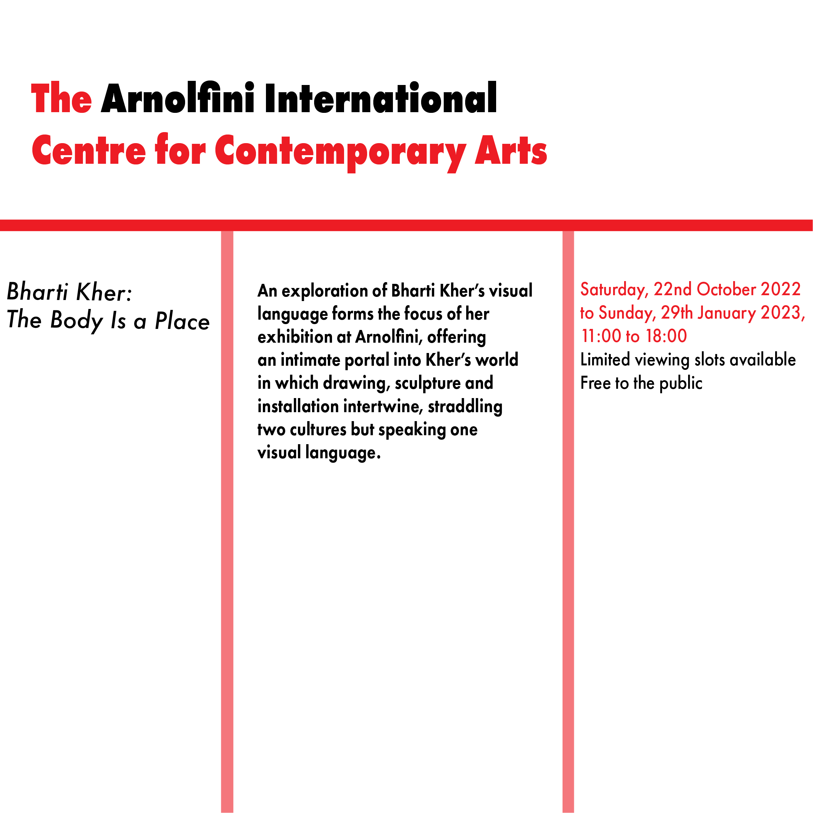
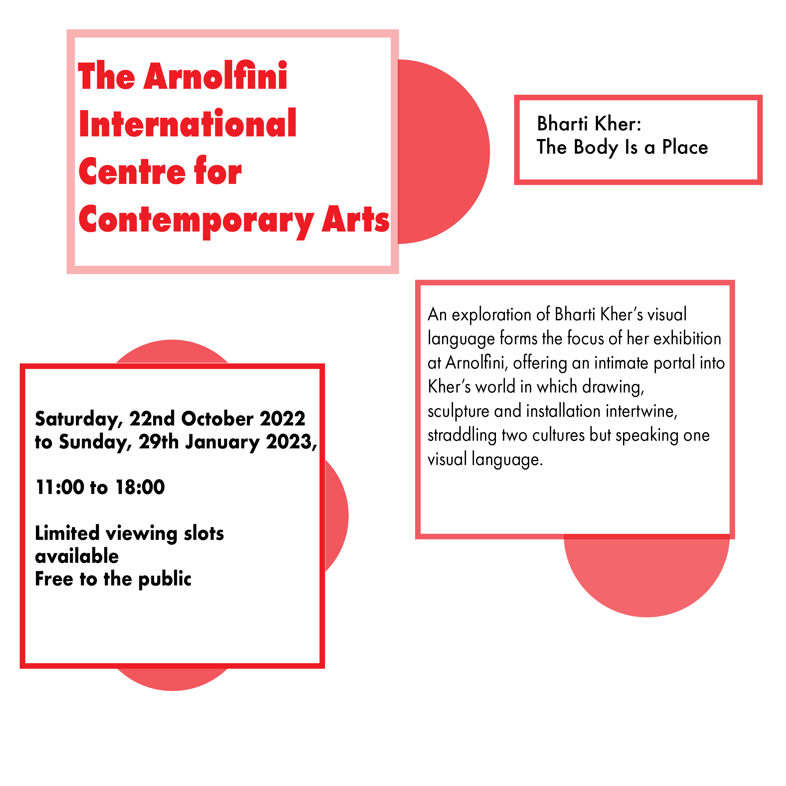
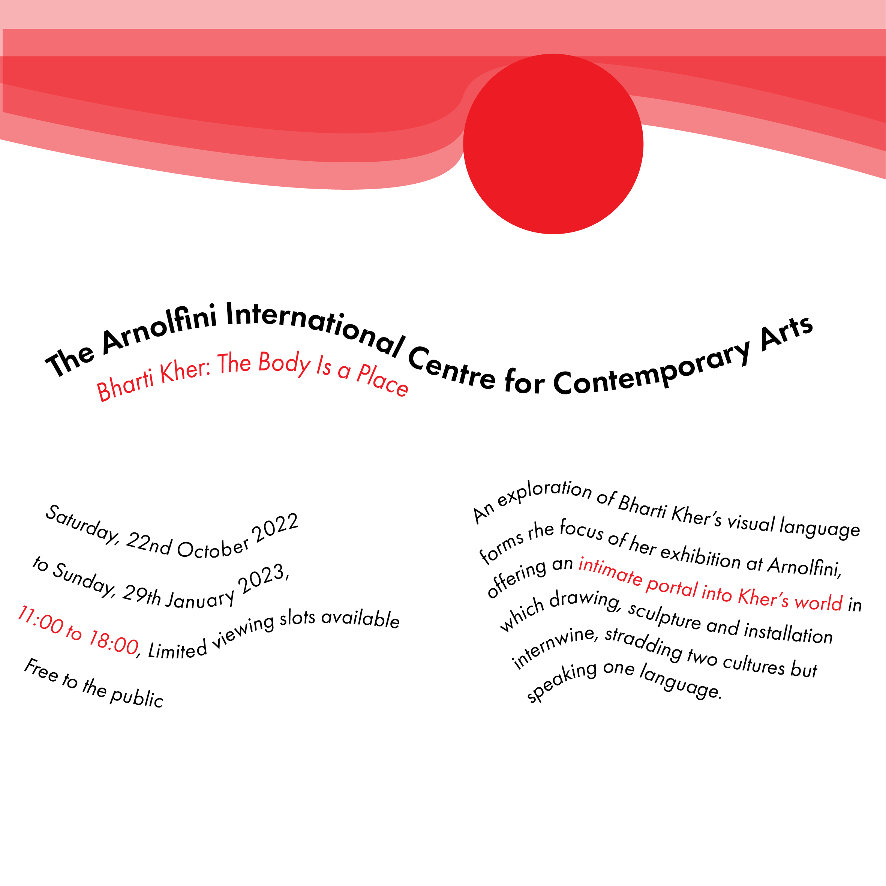
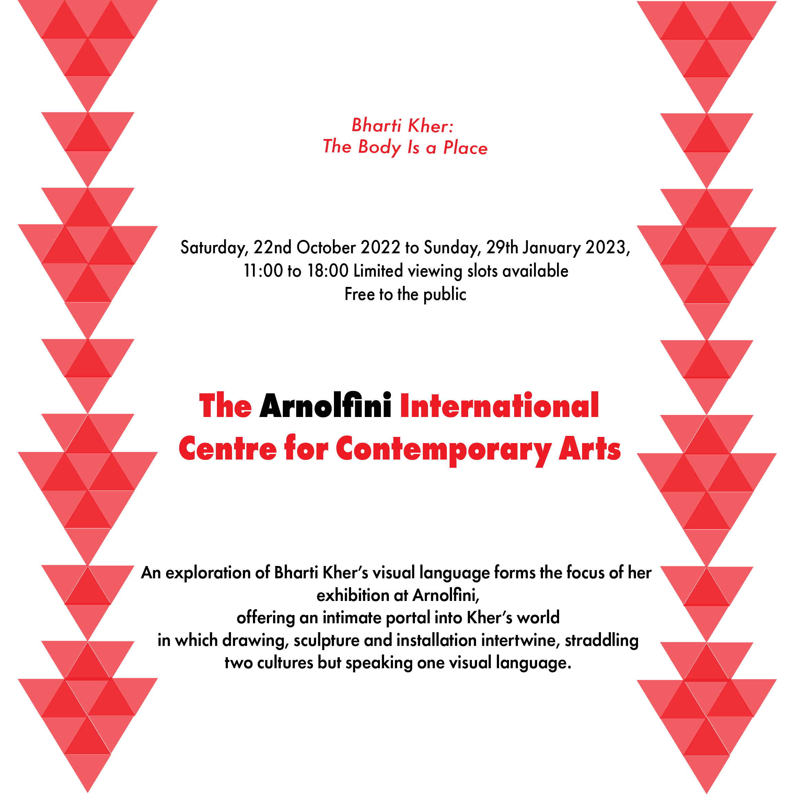

CARP

First poster
Here's my 4 posters that I created
For this poster I decided to let it be my final poster out of 4.
I created repeating circles and circle curves.
I design it through photoshop because it was easier for me and then export it to InDesign.
I then used the colour contrast of yellow text and black background to make it stands out.
Next, the alignment of typography is alligned to the top left for location and the date and the name
of the festival are on the bottom right.
With that, I used a dilatational typographic system to create more variety within this poster.
I have used proximity by using the white space grouping.
This indicates that everything is
grouped and that for the reader to read the text easier.

Second Poster
For this poster I decided to let it be my final poster out of 4.Again, I created repeating circles and circle curves just like the previous one.
I used pen tool to create circles and that to makes a repetition.
The colour contrast is red, blue, yellow and black which could be considered as the primary colour.
The alignment of this poster is...

Third Poster
For this poster I decided to let it be my final poster out of 4.I created repeating circles and circle curves.
I design it through photoshop because it was easier for me and then export it to InDesign.
I then used the colour contrast of yellow text and black background to make it stands out.
Next, the alignment of typography is alligned to the top left for location and the date and the name of the festival are on the bottom right.
With that, I used a dilatational typographic system to create more variety within this poster.
I have used proximity by using the white space grouping.
This indicates that everything is grouped and that for the reader to read the text easier.

Fourth Poster
For this poster I decided to let it be my final poster out of 4.I created repeating circles and circle curves.
I design it through photoshop because it was easier for me and then export it to InDesign.
I then used the colour contrast of yellow text and black background to make it stands out.
Next, the alignment of typography is alligned to the top left for location and the date and the name of the festival are on the bottom right.
With that, I used a dilatational typographic system to create more variety within this poster.
I have used proximity by using the white space grouping.
This indicates that everything is grouped and that for the reader to read the text easier.
Typography
Here are my typography posters

Radial

Dilatational

Random

Grid

Modular

Transitional

Bilateral

CODE
Here are my worksheets
Week 2)
Reflection
Refletion paragraph
Creating a website was a real challenge for me.